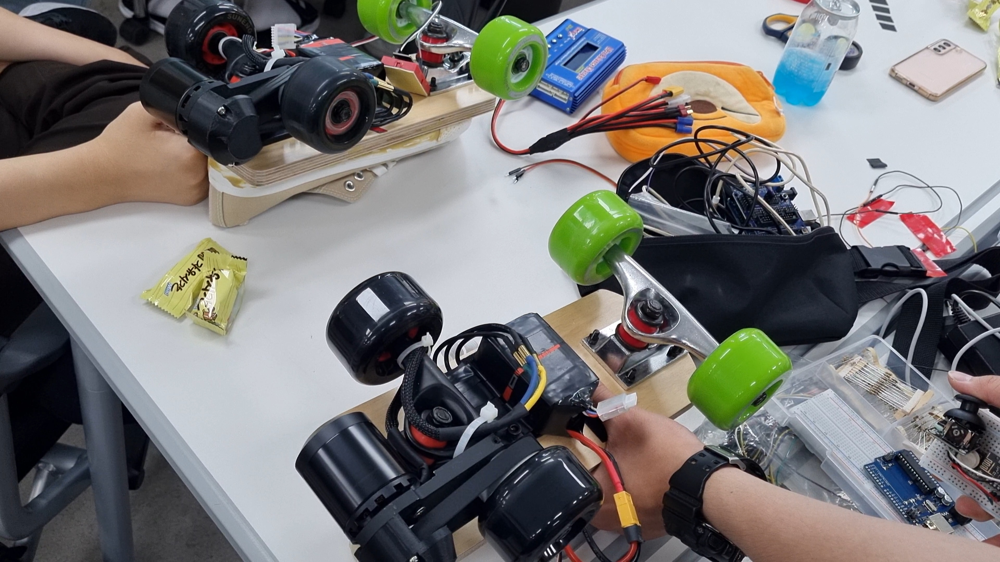
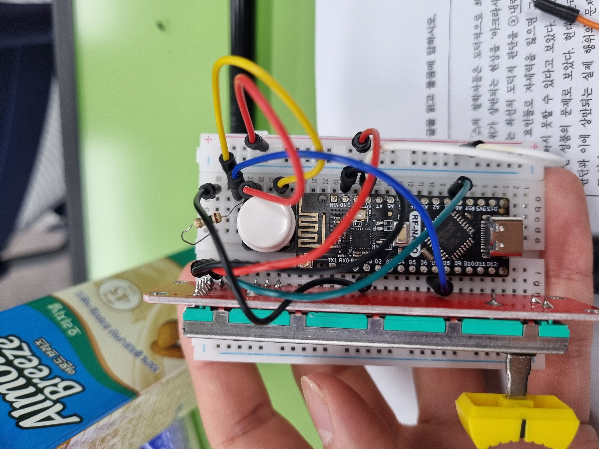
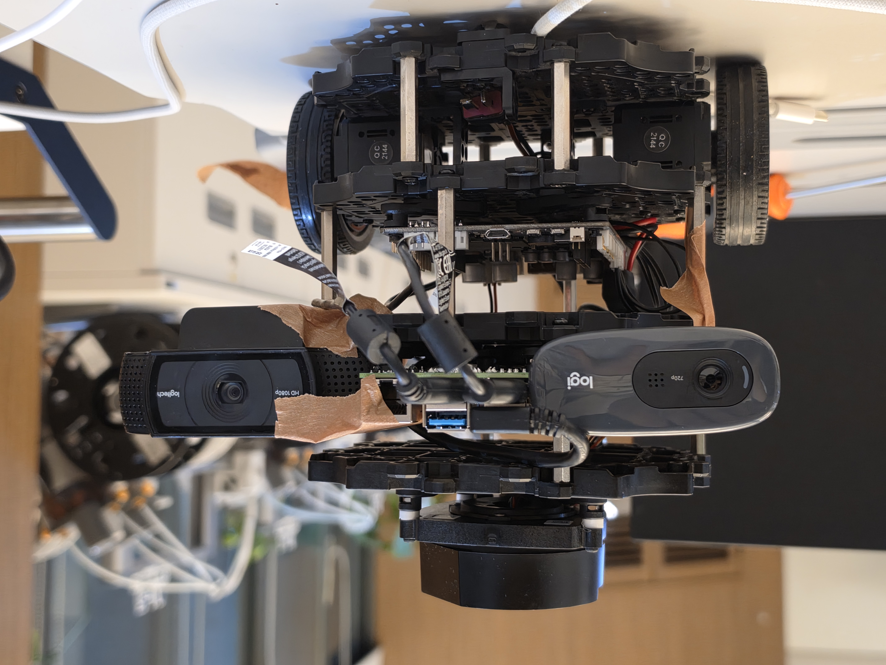
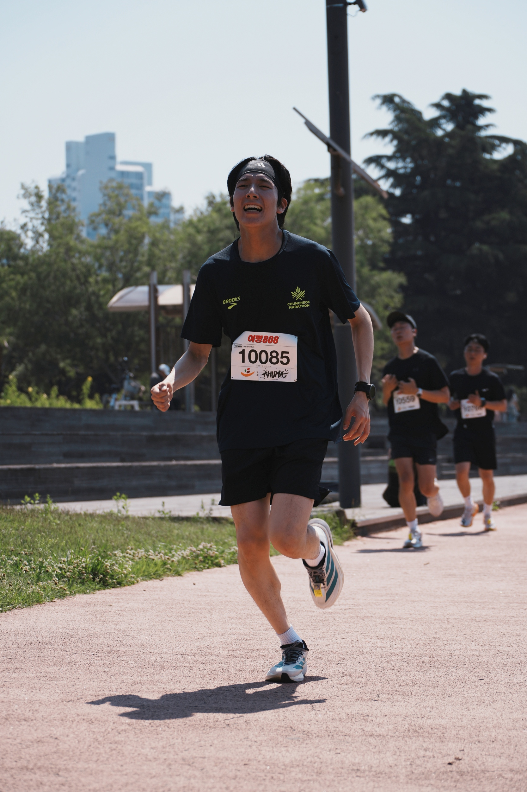

진로
Plan
만든 것이 누군가의 손으로 넘어가는 순간이 좋았다.
그 감각을 로봇으로 이어 가는 4년의 설계.
Human-Robot Interaction (HRI)
& Embodied Robotics
관심: 로봇 제어 · 동역학 · 범용 휴머노이드



만들고,
누군가
써 보는 일.
전동 보드, 추적 로봇, 작은 웹 서비스를 만들어 왔다. 완성도보다 '사람들의 손으로 넘어가는 순간'이 좋아서 계속 만들었고, 그 감각을 로봇으로 이어 가려고 소프트웨어융합학과를 선택했다.
- 직접 설계하고 만드는 하드웨어·소프트웨어에 끌린다
- 제어와 SW를 함께 다루는 소융의 커리큘럼이 내 방향과 맞았다
- 로봇의 움직임을 설계하는 제어·동역학·메카트로닉스를 더 깊이 공부하고 싶다
사람 곁에서
움직이는 로봇.
HRI (Human-Robot Interaction) — 로봇이 사람을 이해하고 자연스럽게 상호작용하는 방법을 연구하는 분야.
범용 휴머노이드 — 제어·임베디드·비전 기술을 융합해 다양한 환경과 작업에 대응하는 인간형 로봇을 개발하는 분야.
- 학술동아리 HYPER — ROS2 스터디와 로봇 프로젝트 참여
- TurtleBot ROS2 주행·맵핑 — Gazebo·RViz 시뮬레이션에서 실물 로봇에 적용
- 각종 프로젝트/대회 · 임베디드 경험 쌓기

만드는 사람에서, 연구하는 사람으로.
지능형로봇공학
소융 로봇·비전트랙보다 제어·로봇을 더 깊고 넓게 다룰 수 있어, 관심 분야 공부·연구의 폭을 키워 준다.
- 소융 로봇·비전과 27학점 중복 → 추가 이수는 24학점뿐
- 기계과 교수 두 분 면담 — “제어를 할 거면 하는 게 유리하다”
H-STEM 융합전공
“독창적 연구 역량 및 대학원 진학 준비 지원”에 중점을 둔 전공. 다전공으로만 이수 가능하며 33학점.
- 소융·기계와 약 12학점 중복 예상 · PBL 프로젝트 2개로 졸업논문 대체
- 학과장·담당 교수 면담 — 전공선택 전부 절대평가
- 대학원 진학 예정 — 연구 역량을 키우고 다양한 분야로 시야 확장
전공의 개수보다
연구의 깊이.
삼중전공은 선택지로 남기되, 메인 루트는 소융+기계 이중전공과 학부연구생·대회·프로젝트를 함께 가져가는 방향.
이중전공 로드맵
소융 + 기계.
h-STEM 부담을 덜어 연구·인턴 시간을 확보하는, 가장 현실적인 메인 경로. 목표는 2031 봄(보수적으로 가을) 졸업.
- 2학년 ’28자료구조·알고리즘·확률, 공학수학·동역학·회로 — 소융·기계 기초를 함께
- 3학년 ’29운영체제·DB·자동제어·시스템동역학, 3D데이터·영상분석 — 핵심 선수과목 로드맵
- 4학년 ’30–31로봇프로그래밍·컴퓨터비전·로봇공학, 소융·기계 캡스톤, 졸업논문
학부연구생을
축으로.
- 2028 겨울ROS2·임베디드 복습, 센서·제어 미니 프로젝트, GitHub에 개발 과정 문서화
- 2029각종 프로젝트/대회 참여로 임베디드 경험 쌓기 → 포트폴리오 v1 / 겨울 학부연구생 컨택, 관심 랩 3–5곳 정리
- 2030캡스톤·개인 로봇 프로젝트를 대회·데모 영상으로 확장 / 겨울 방학 인턴·대학원 컨택 메일
- 2031졸업논문 마감, 대학원 원서·면접, 연구실 합류 준비
국내 석사 (2년)
로봇 SW·제어·비전 역량을 연구실에서 압축해 쌓는, 가장 현실적인 경로. 이후 산업계 R&D 또는 박사 진학.
연구실·지도교수와의 적합성(fit) 우선 — 학교명보다 연구 주제·장비·펀딩·졸업생 진로.
석박 통합 · 해외
- 석박 통합 — 박사까지 확신이 설 때, 미스매치 리스크는 감수
- 해외 대학원 — 연구 실적·강한 추천서·영어·펀딩 매칭이 핵심
- 둘 다 지금 확정하기보다, 학부 결과물로 가능성을 넓혀 두는 단계
로봇을
만드는
사람.
거창한 확신보다, 만드는 게 좋아서 시작했다. 그 초심을 잃지 않은 채 로봇을 깊이 다루는 사람이 되는 것 — 그게 졸업 후 그려 보는 모습이다.
- 로봇틱스 기업 R&D — 석사 후 바로 가는 경로도 충분히 현실적
- 정부출연연구소(정출연) 연구원
- 길게는 교수, 또는 직접 만드는 스타트업까지

지금 다 정하지
않아도 괜찮다.
방향을 좁히기보다, 만들고 이어 가며 넓혀 가는 4년으로.
Human-Robot Interaction (HRI) & Embodied Robotics